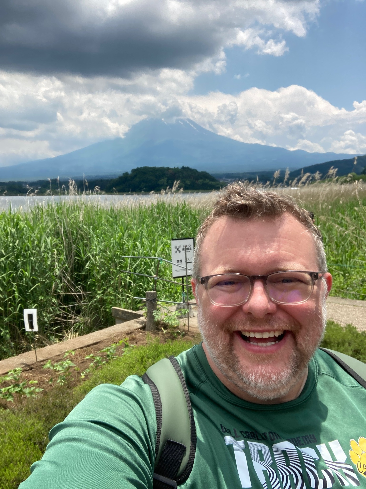
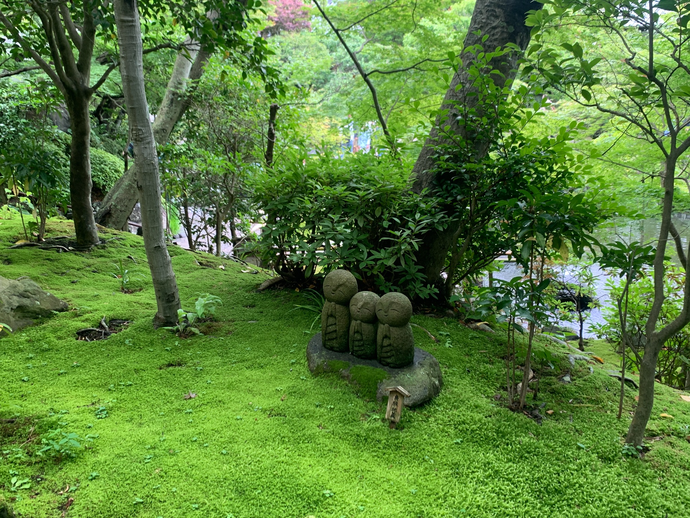

About
Ian M. Church
I am a philosopher whose work sits at the intersection of epistemology, psychology, cognitive science, philosophy of religion, and artificial intelligence.

A scholar of intellectual life.
My first academic love is epistemology: knowledge, belief, intellectual virtue, testimony, disagreement, and the limits of human understanding. Over time, that interest has led me toward psychology, cognitive science, experimental methods, philosophy of religion, and, more recently, the epistemology of artificial intelligence.
I direct the Areté Research Center for Philosophy, Science, and Society and have provided intellectual leadership on major collaborative grants across philosophy, psychology, and religion.
Beyond the CV.
I care about philosophy as a living practice: a way of asking serious questions about how people think, know, trust, doubt, and live together. This site is meant to make that work easy to explore without reducing it to a list of titles.
